배기 기능만 작고 단단하게
V2E는 배기 밸브 하나에 집중한 컨트롤러입니다. 차 통신선에는 손대지 않고 배기 밸브와 스위치 LED만 다룹니다. 설정은 폰 앱 「N Controller v2」에서 합니다.
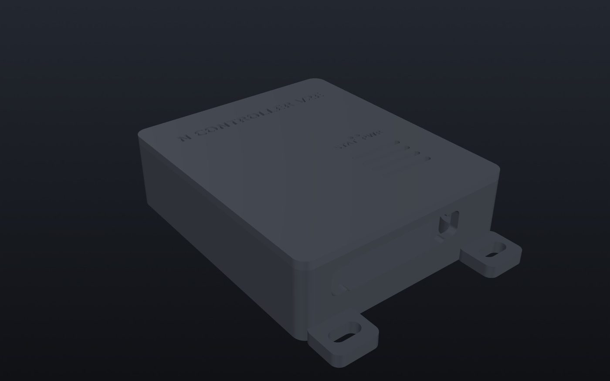
V2E 구성
컨트롤러 본체 · 차량 연결 하네스
설치
케이블 타이 두 줄로 고정 · 나사 · 양면테이프 없이
지원 차종
더 뉴 아반떼 N (페이스리프트) · DCT · 수동
아반떼 N (페이스리프트 전) · DCT · 수동
벨로스터 N · DCT · 수동
코나 N · DCT
폰
안드로이드 6.0 이상 · 인터넷 연결 필요 · 자동 연결은 안드로이드 8.0 이상. 아이폰은 Bluefy(블루투스 웹 브라우저)에서 N Controller 웹으로 씁니다.
작고 단단한 본체
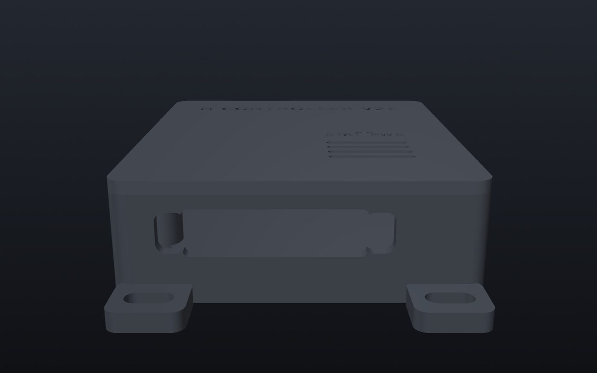
순정과 같은 방식, 밸브 0~100%
순정이 밸브를 움직이는 것과 같은 방식으로 0~100% 원하는 만큼 엽니다. 지금 얼마나 열렸는지 실시간으로 보여 줍니다.
꺼지면 순정
시동이 꺼지면 밸브는 순정 상태로 유지합니다. 주차 중에도 순정 밸브 고착방지가 그대로 작동합니다.
작고 가볍게
필요한 부품만 넣어 작게 만들었습니다. 바닥의 고리 두 곳에 케이블 타이를 넣어 하네스 쪽에 단단히 묶습니다.
블루투스 비밀번호
6자리 비밀번호를 정해 두면 내 폰만 컨트롤러에 연결됩니다.
순정 미등도 LED처럼
모드마다 순정 미등 · 끔 · 컨트롤러 LED 색 중 하나를 고릅니다. 모드가 바뀌기 전에는 순정 미등도 깜박여 알려 줍니다.
V2X로 바꾸기 쉽게
아반떼 N은 하네스가 V2X와 같아서 나중에 본체만 바꿔 끼우면 계기판 · N HORIZON까지 씁니다.
시동을 걸면 자동 연결, 위젯으로 모드 전환
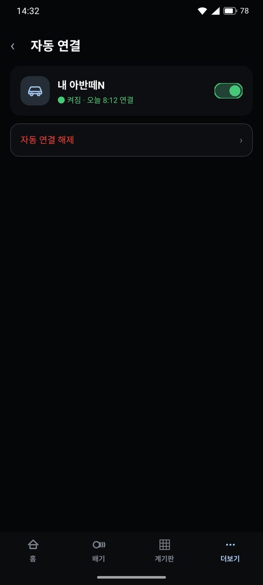
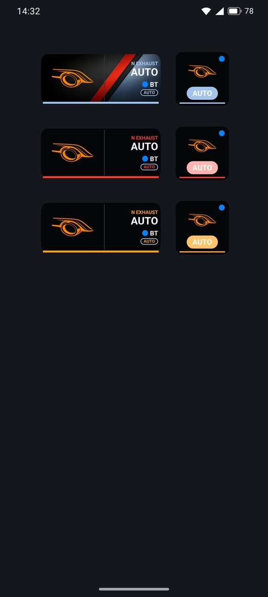
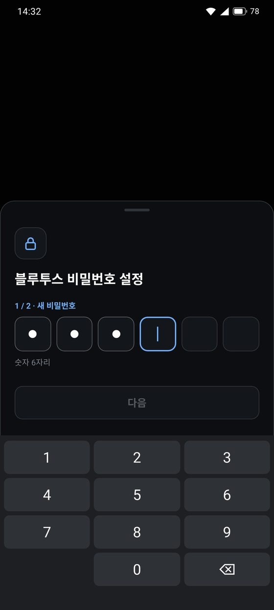
처음 등록
처음 연결할 때 차종(아반떼 N · 더 뉴 아반떼 N · 벨로스터 N · 코나 N)과 이름만 정하면 됩니다.
모드별 사용 시간
홈에서 순정 · 닫힘 · 열림 · 수동을 지금까지 얼마나, 몇 번 썼는지 봅니다. 최근 운행 · 누적 운행 시간과 밸브 고착 방지가 몇 번 돌았는지도 함께 보입니다.
알림으로 상태 확인
연결 중엔 알림에 지금 배기 모드가 뜹니다. 앱을 열지 않아도 바로 확인할 수 있습니다.
컨트롤러 바꾸기 · 문의
다른 컨트롤러로 바꿀 땐 「재등록」으로 다시 등록합니다. 궁금한 점은 앱에서 카카오톡 오픈채팅으로 바로 물어보세요.
밸브를 0~100%, 순정과 같은 방식으로
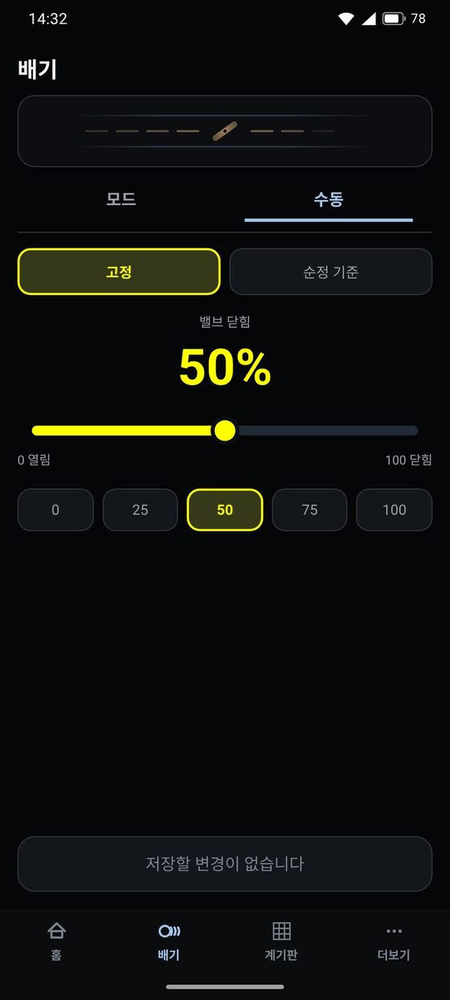
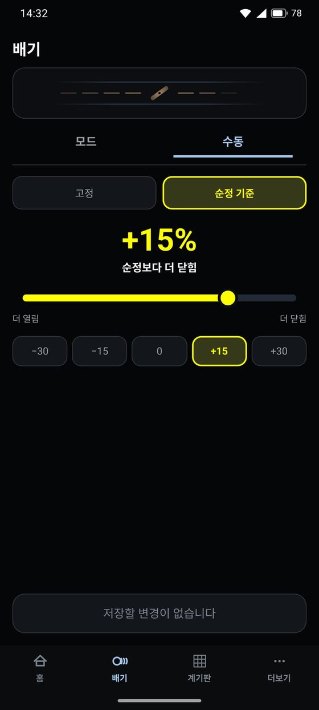
네 가지 모드
순정(차가 원래 하던 대로), 닫힘 · 열림(완전히 닫거나 열기), 수동(0~100% 원하는 만큼). 쓰는 모드만 골라 순서를 정하면, 컨트롤러 버튼이나 위젯으로 차례로 바뀝니다.
밸브가 얼마나 열렸는지 실시간으로
「순정」 모드여도 차가 밸브를 움직이는 그대로 앱에서 실시간으로 봅니다.
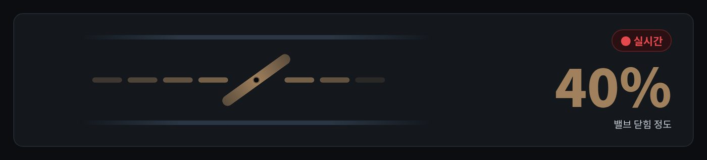
순정 모드에서도
순정일 때 차가 움직이는 밸브도 그대로 보여 줍니다.
어디서든 같이
홈 화면과 배기 탭 맨 위에서 같은 밸브 그림이 함께 움직입니다.
색으로 한눈에
닫힐수록 초록, 열릴수록 빨강으로 바뀌어 숫자를 보지 않아도 지금 상태를 알 수 있습니다.
이른 아침 출발부터 밸브 관리까지
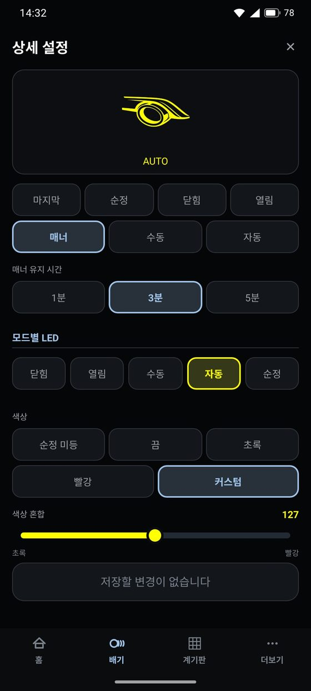
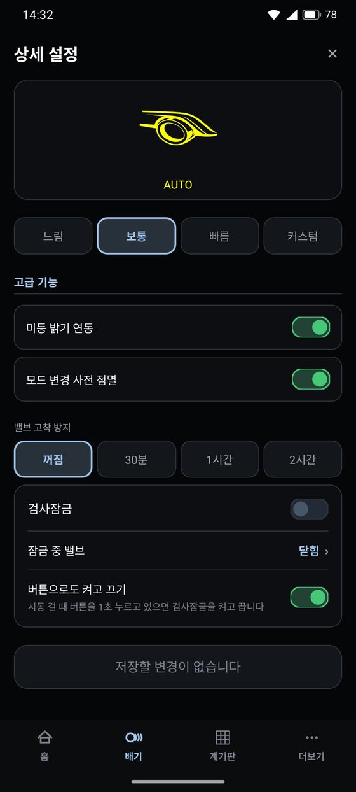
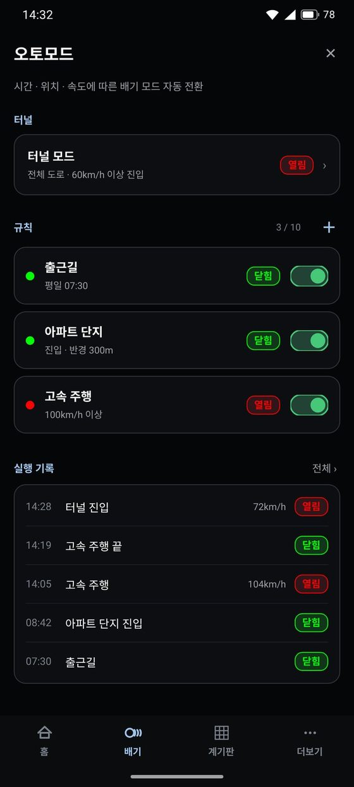
스위치 LED도 모드마다 내 스타일로
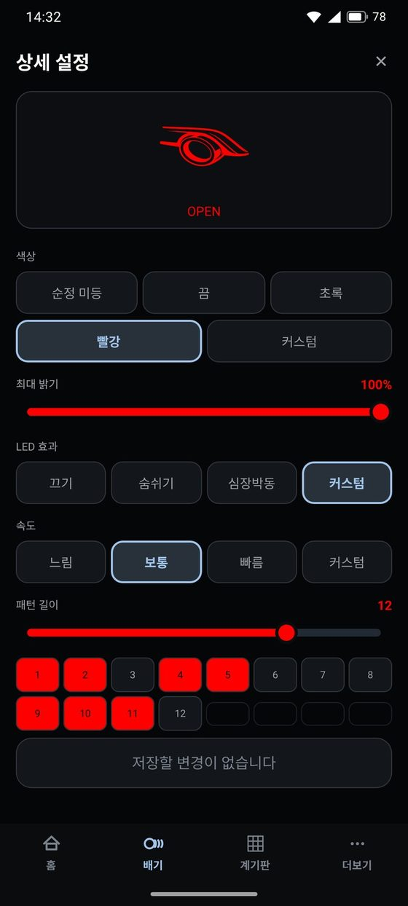
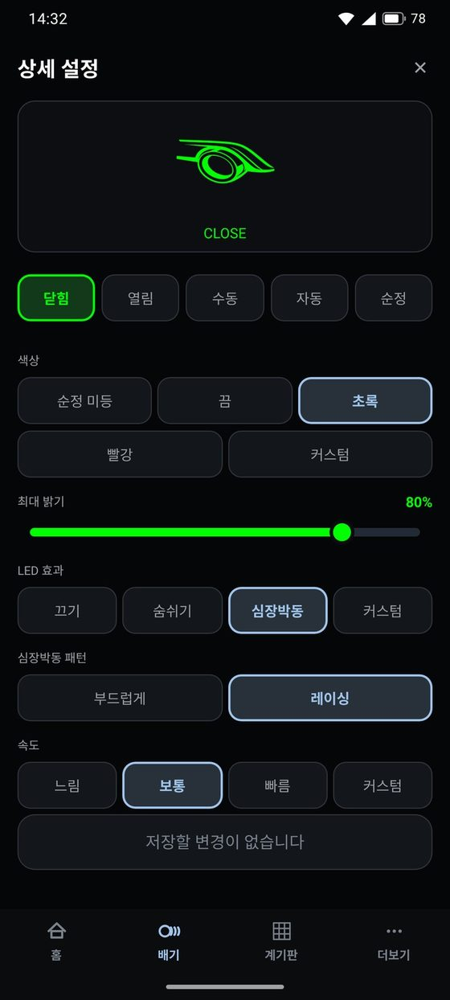
밝기 · 미등 연동
모드마다 최대 밝기를 정하고, 미등을 켜면 LED가 알아서 어두워집니다.
바꾸기 전에 깜박
버튼으로 모드를 바꾸면 바뀌기 전에 새 모드 색으로 깜박여 알려 줍니다. 순정 미등도 같이 깜박입니다.
바로 미리보기
고르는 대로 화면 위 스위치 그림이 그 색 · 효과로 바로 움직입니다.
정기검사도 버튼 한 번으로
검사장에 가기 전에 켜 두면 밸브와 LED가 정해 둔 대로 묶입니다. 시동을 껐다 켜도, 버튼을 눌러도 풀리지 않고, 다시 끌 때까지 그대로입니다.
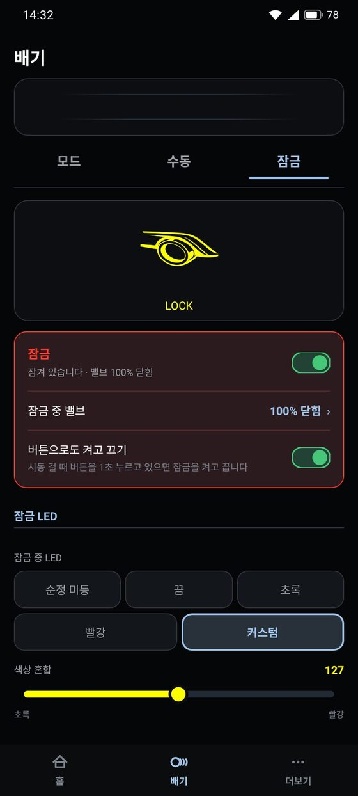
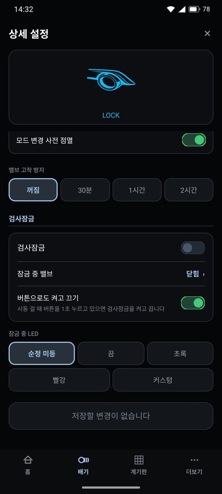
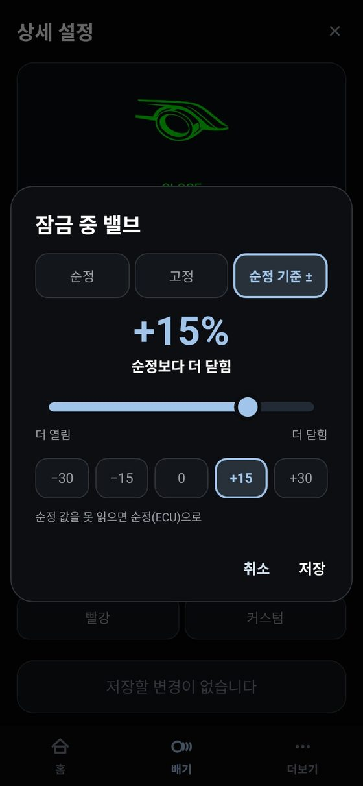
잠금 중 밸브를 골라서
순정(차가 원래 하던 대로), 고정(닫힘 % 슬라이더로 정한 만큼, 100%는 완전히 닫힘), 순정 기준 ±(순정보다 최대 50% 더 닫거나 엶).
풀리지 않게 켜고 끄기
앱에서 스위치 하나로, 또는 시동 걸 때 컨트롤러 버튼을 1초 누르면 켜고 끕니다. 버튼으로 켜면 빨강, 풀면 초록으로 깜박여 알려 줍니다.
시간 · 장소 · 속도 · 터널에 따라 알아서
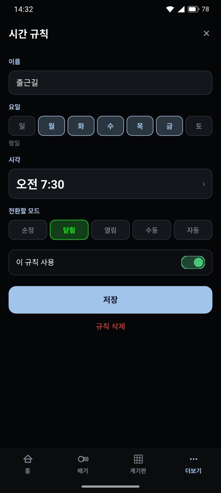
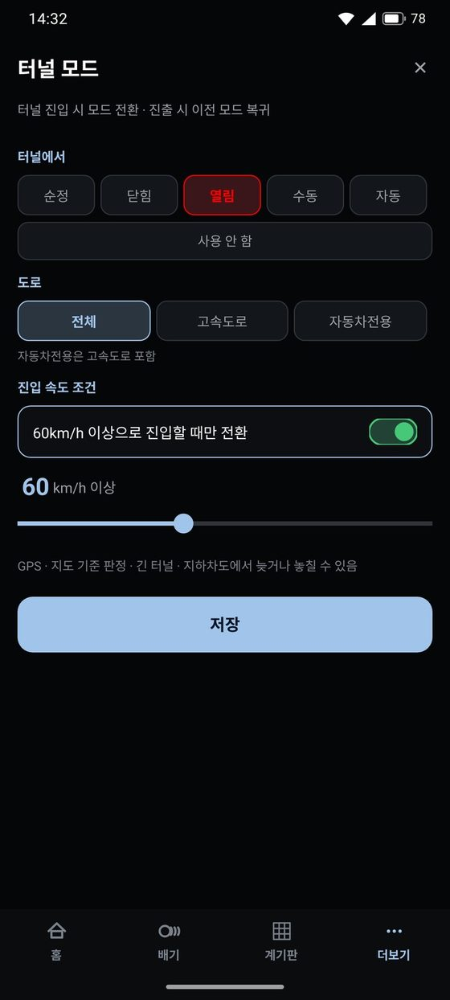
장소 규칙
지도에서 장소를 고르고 반경을 50~1,000m로 정합니다. 그 안에 들어설 때나 나갈 때 중 언제 바꿀지도 고릅니다.
속도 규칙
폰 GPS 속도로 정한 속도 이상 · 이하, 정차 · 주행 · 고속마다 다른 모드, 급가속할 때 잠깐(2~30초) 바꾸기 중에서 고릅니다.
블루투스로 바로 업데이트
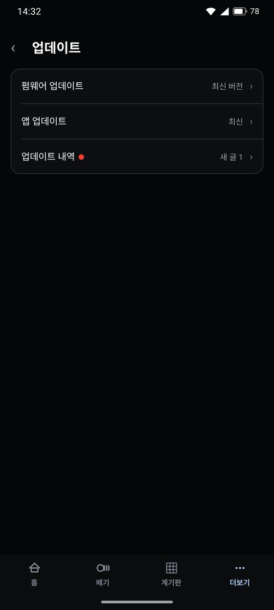
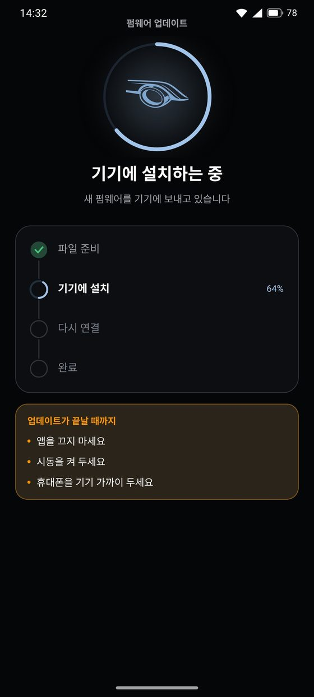
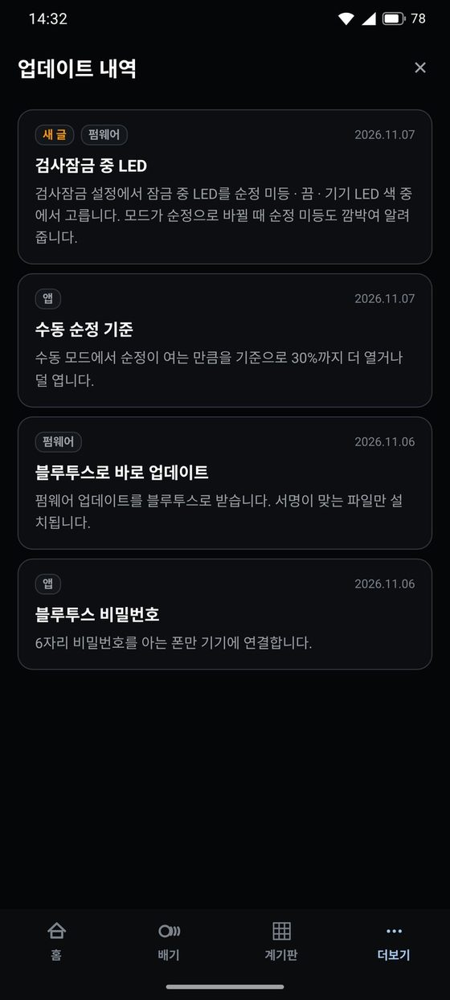
아이폰 지원과 안전한 설계
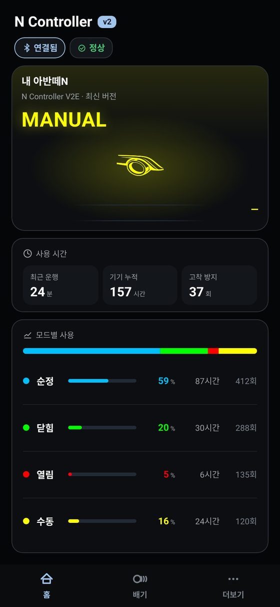
KC 인증 블루투스 모듈
블루투스 모듈은 국내 KC 인증을 받은 부품을 씁니다.
꺼지면 순정
시동이 꺼지면 밸브는 순정 상태로 유지합니다. 주차 중에도 순정 밸브 고착방지가 그대로 작동합니다.
내 폰만 연결
6자리 블루투스 비밀번호를 정해 두면 내 폰만 컨트롤러에 연결됩니다.
검사장 걱정 없이
잠금은 시동을 껐다 켜도, 버튼을 눌러도 풀리지 않습니다. 잠긴 동안에는 설정도 저장되지 않습니다.
작게, 단단하게
바닥 고리 두 곳에 케이블 타이를 넣어 하네스 쪽에 묶습니다. 나사 · 양면테이프 없이 고정합니다.
그 밖의 편의 기능
컨트롤러 버튼
짧게 누르면 다음 모드로 바뀝니다. 시동 걸 때 1초 누르고 있으면 잠금을 켜고 끕니다. 매너 모드 중에 누르면 바로 원래 모드로 돌아갑니다.
미등 밝기 연동
미등을 켜면 스위치 LED도 알아서 어두워집니다.
업데이트 실패해도 안심
블루투스로 바로 받고, 실패해도 이전 버전으로 자동으로 돌아갑니다. 새 기능은 앱 안 「업데이트 내역」에서 봅니다.
컨트롤러 바꾸기 · 문의
다른 컨트롤러로 바꿀 땐 앱에서 다시 등록합니다. 궁금한 점은 앱에서 카카오톡 오픈채팅으로 바로 물어볼 수 있습니다.
필요한 만큼 고르고, 나중에 바꿔 끼울 수 있습니다
아반떼 N은 하네스가 같아서 V2E에서 V2X로 본체만 바꿔 끼울 수 있습니다.
N Controller V2E
배기 밸브 · 스위치 LED · 순정 미등
실시간 밸브 개도
순정 · 닫힘 · 열림 · 수동 · 매너 · 잠금
오토모드(시간 · 장소 · 속도 · 터널)
아이폰 웹 · 안드로이드 앱
N Controller V2X
V2E 기능 전부
차량 정보 250가지 이상
자동 규칙(속도 · 회전수 · 드라이브 모드)
나만의 계기판 · 경로안내 · 랩타이머
고장코드 검사 · N HORIZON 디스플레이